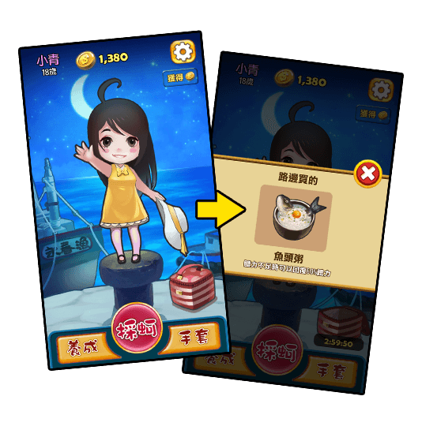
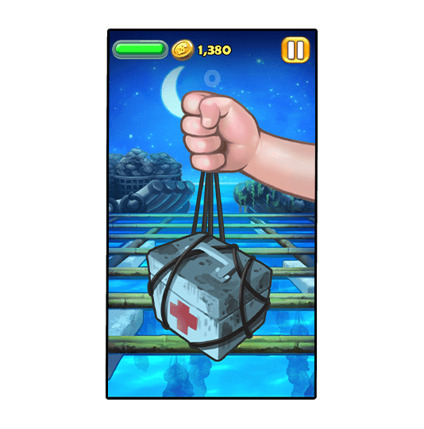

全新挑戰
船位互換
玩家將會在採蚵過程中遇見船位互換的事件，當船位互換時也代表著採蚵和回收垃圾的滑動方向需要「互換」。
● 此事件會在難度8以上開始出現。
全新系統
美食享用
玩家將能從小青腳邊的食物箱開出美食，美食能在「體力不足」的時候享用，恢復部份的體力。
● 每三小時可領取一次，已經擁有的美食會轉為金幣獎勵。


全新拉起物
急救箱
玩家將會在採蚵過程中拉起急救箱，要使用急救箱則必須「上滑」，成功上滑就能即時恢復體力。
● 初始恢復量為10%，恢復量可透過技能升級。